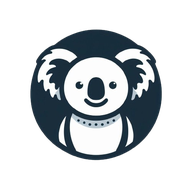
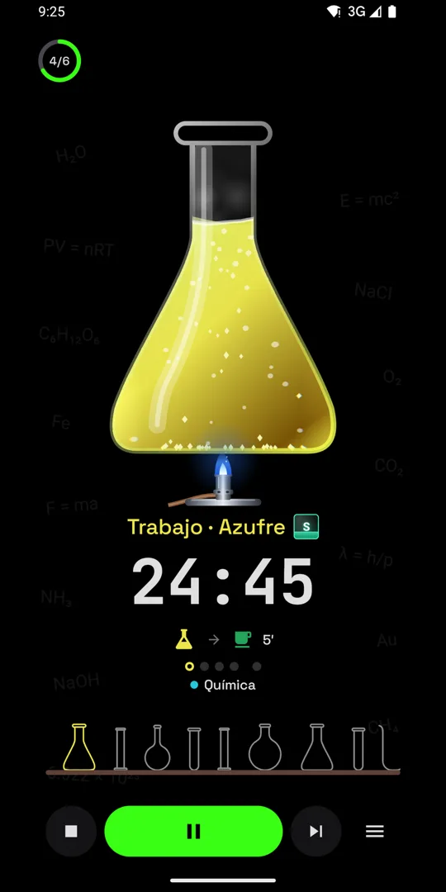
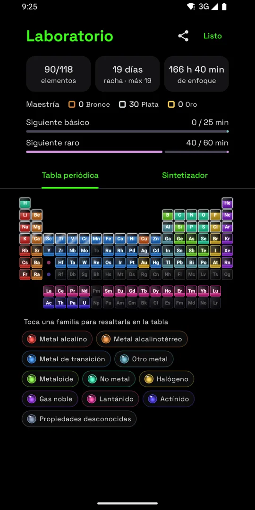
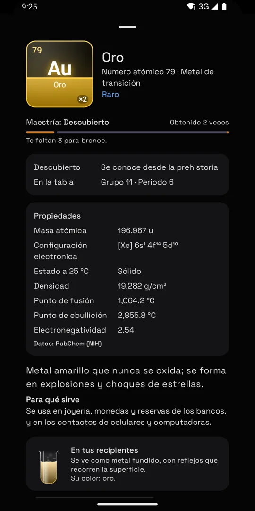
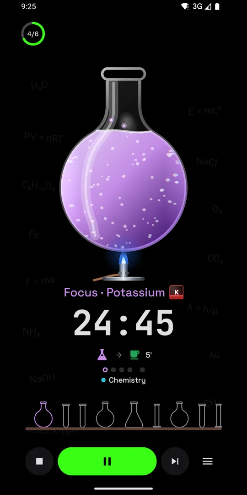
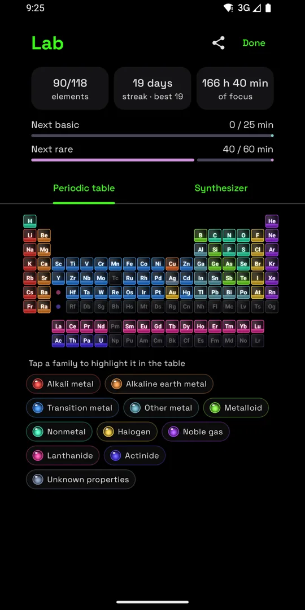
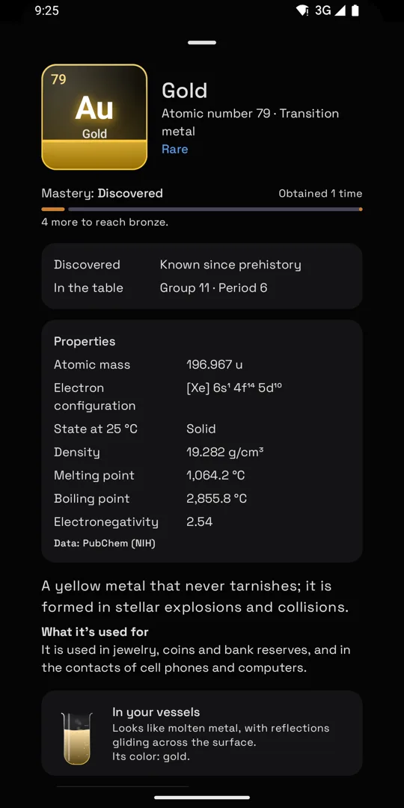

Lab Pomodoro
Un timer Pomodoro donde tu tiempo de enfoque te da elementos de la tabla periódica.
A Pomodoro timer where your focus time earns elements of the periodic table.
Descárgala en Google PlayGet it on Google Play





🧪 Tu plan de enfoque
Dile cuántas horas quieres trabajar y arma los pomodoros y descansos. El líquido se evapora mientras te concentras.
⚛️ La tabla periódica
Cada pomodoro te da un elemento. Fusiónalos en el sintetizador para conseguir los sintéticos.
👥 Estudia con amigos
Crea una sala y todos siguen el mismo plan, viendo quién está enfocado.
⌚ En tu reloj
Controla el plan desde Wear OS, con tile y complicación. Con Pro, corre aunque no tengas el teléfono cerca.
🧪 Your focus plan
Tell it how many hours you want to work and it builds your pomodoros and breaks. The liquid evaporates while you focus.
⚛️ The periodic table
Every pomodoro earns you an element. Fuse them in the synthesizer to get the synthetic ones.
👥 Study with friends
Create a room and everyone follows the same plan, seeing who's focused.
⌚ On your watch
Control your plan from Wear OS, with a tile and a complication. With Pro, it runs even without your phone nearby.